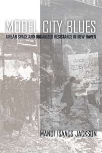

<body bgcolor="#FFFFFF" text="#000000" link="#0000FF" vlink="#CC0000" alink="#CC0000"><center><hr width="350" size="1" align="center" noshade>A lively account of social protest and urban renewal in a struggling American city<hr width="350" size="1" align="center" noshade><p><a href="https://cdcshoppingcart.uchicago.edu/Cart/ChicagoBook.aspx?ISBN=9781592136032&&PRESS=temple" target="_top">Buy this book!</a> | <a href="https://cdcshoppingcart.uchicago.edu/Cart/Cart.aspx?PRESS=temple" target="_top">View Cart</a> | <a href="https://cdcshoppingcart.uchicago.edu/Cart/Cart.aspx?PRESS=temple" target="_top">Check Out</a></p><p></p></center><!--none//--><h1>Model City Blues</h1>
<H2>Urban Space and Organized Resistance in New Haven</H2>
<h3>Mandi Isaacs Jackson</h3>
<P>cloth 1592136036 $80.50, Apr 08, <FONT COLOR=#990033>Available</FONT>
<br>paper 1592136044 $30.95, Apr 08, <FONT COLOR=#990033>Available</FONT>
<br>Electronic Book 1592136052 $30.95 <FONT COLOR=#990033>Available</FONT>
<BR> 296 pp
6x9
1&nbsp;table 5&nbsp;figures 45&nbsp;halftones
</P><h3 align="center"><P><font color="#996633">Urban Communication Foundation Jane Jacobs Urban Communication Publication Award,
2008</font></P>
</H3>
<BLOCKQUOTE><I>"Mandi Jackson brings us back to the once-fabled struggle in New Haven over �the right to the city�. On the one side, the city's powerbrokers, in the name of urban revitalization, planned to bulldoze the neighborhoods in which African Americans had settled. On the other side, the people of those neighborhoods fought to hold onto the places that had become integral to their lives. Jackson's story shows us the centrality of place in human life and politics, and helps us to recognize the many tragedies that continue to result from contemporary processes of gentrification"</I>
<br>&#151<b>Frances Fox Piven</b>, Brooklyn College, Graduate School of the City University of New York
<P>"</i>Model City Blues<i> breaks new ground reassessing New Haven politically through the lens of ethnographic and historic research. Through an urban context, Jackson synthesizes the cultural and economic foundations of past and future social movements. This book is the most impressive culmination of the most significant social and political research on New Haven in at least a generation."</I>
<br>&#151<b>Immanuel Ness</b>, Brooklyn College, City University of New York</I></BLOCKQUOTE>
<p><I>Model City Blues </i>tells the story of how regular people, facing a changing city landscape, fought for their own model of the �ideal city� by creating grassroots plans for urban renewal. Filled with vivid descriptions of significant moments in a protracted struggle, it offers a street-level account of organized resistance to institutional plans to transform New Haven, Connecticut, in the 1960s. Anchored in the physical spaces and political struggles of the city, it brings back to center stage the individuals and groups who demanded that their voices be heard.
<p>By reexamining the converging class- and race-based movements of 1960s New Haven, Mandi Jackson helps to explain the city�s present-day economic and political struggles. More broadly, by closely analyzing particular sites of resistance in New Haven, <i>Model City Blues</i> employs multiple academic disciplines to redefine and reimagine the roles of everyday city spaces in building social movements and creating urban landscapes
<BR>&nbsp;<h2>Excerpt</h2><P>Excerpt available at <a href="http://www.temple.edu/tempress">www.temple.edu/tempress</a></p>
<BR>&nbsp;<h2>Reviews</h2>
<p><i>"[Jackson's] case studies successfully emphasize the coalitions forged between residents and civil rights, anti-war, and union activists, among others, because the issues of affordable urban housing and accessible public spaces affected shared constituencies.... Summing Up: Highly recommended."</i>
<br>&#151<b><i>Choice</i></b>
<p><i>"This is a thoughtful, carefully researched study of opposition to the urban renewal projects that scarred New Haven, Connecticut, in the 1950s and 1960s....[A]n impressive piece of scholarship that will be of particular interest to scholar-activists studying urban social movements. Even readers who do not share Jackson's opinions will gain new insights into the 1960s social and political turmoil that she describes." </i><br>&#151<b><i>American Historical Review</i></b>
<p><i>"[T]he real strength of this book derives from the case study method. It is among the most subtle historical treatments available of the struggle for local control over decisions that affect urban communities. By focusing on one city and eschewing the standard historical narrative of the �failure� of the War on Poverty, Jackson provides a superlative account of how social policy unfolds in and transforms actual places�offices, coffee shops, homes, parks, taverns, school auditoriums, and city streets."</i>
<br>&#151<b><i>The Journal of American History</i></b>
<p><i>�</i>Model City Blues<i> offers a detailed history of local grassroots resistance and mobilization, from the point of view of the movement acts themselves, who responded to the urban conflicts of the period. Drawing on personal interviews and extensive archival documents, and amply illustrated with photographs, drawings, and maps, the book should interest scholars of urban politics, social movements, and inner-city racial inequality in the United States�. </i>Model City<i> Blues is a valuable study that effectively shows how to deploy empirically the concept of urban space to organize an historical argument.�</i>
<br>&#151;<b><i>Contemporary Sociology </i></b>
<p><i>"Jackson�s book deftly weaves national narratives of transitioning urban landscapes, policies, and politics into local stories of individuals, organizations, and spaces.... Jackson�s work provides important historical contextualization for current debates on gentrification, urban revitalization, and other processes, provocatively challenging the inevitability of the form cities take. Clearly written, well researched, and theoretically compelling, Model City Blues is a true pleasure to read." </i>
<br>&#151<b><i>The Journal of American Ethnic History</i></b>
<p><i>"The cases are painstakingly researched�What stands out in this book is the reminder of the arrogance and destructiveness of urban renewal in the 1950s and 1960s."</i>
<br>&#151<b><i>Urban Affairs Review</i></b>
<p><i>"This is an excellent account of the displacement of people, initially a mix of White ethnics and African Americas, and later primarily African Americans and Puerto Ricans�. This study is an important contribution to urban history in the 1950s and 1960s and to the human costs of urban renewal."</i><br>&#151<b><i>Multicultural Review </i></b>
<BR>&nbsp;<h2>Contents</h2><P>
<p>Acknowledgements<br>
List of Abbreviations<br>
<p>Introduction<br>
The Interstate and the Demonstration City: Master Planning and Maximum Feasible Participation<br>
Contested Space in a Model City<br>
Neighborhoods and Movement Spaces on the Ring Road Map<br>
Mapping the Story<br>
<p>Chapter 1 : "The Ghosts of Oak Street's Paved Ravines": The Oak Street Project, the Construction of Public Consensus, and the Birth of a Slumless City<br>
The Planning Tableau and the Experts' Dilemma<br>
Creating Consensus and Illustrating Progress<br>
The Progress Pavilion: "Watch the Picture Change!"<br>
"Very Minimun" Dissent<br>
<p>Chapter 2 : On Dixwell Avenue: Civil Rights and the Street<br>
The Mayor's Proposal<br>
Two Dixwells, one Corner<br>
A New Kind of Project<br>
Taking the Street<br>
Understanding the Avenue<br>
Remaking "New Haven's Harlem"<br>
<p>Chapter 3 : The Hill Neighborhood Union and Freedom Summer North: Citizen Participation and Movement Spaces in a "Project Area"<br>
The Hill<br>
The Hill Neighborhood Union<br>
The Hill Rent Strikes<br>
The Freedom School<br>
The Children's Park<br>
The National Commission on Urban Problems: "Too Many People Are a Blighting Influence"<br>
<p>Chapter 4 : Maximum Feasible Management: The "Autoatic" City and the Hill Parents' Association<br>
Hill Reconnaissance<br>
A Particular King of "Model"<br>
The Hill Parents' Association<br>
Bracing for Summer<br>
<p>Chapter 5 : Renewal, Riot, and Resistance: Reclaiming "Model Cities"<br>
The Riot<br>
A "War Zone" on Congress Avenue<br>
The Aftermath<br>
Whose "Model Cities"?br>
<p>Chapter 6 : The City and the Six-Lane Highway: Bread and Roses and Parking Garages<br>
Bread and Roses<br>
Unmasking the Ring Road<br>
Route 34: "Like Blowing into a Hurricane"<br>
The Language of Agitation<br>
Public Rehearings<br>
People Against the Garage<br>
"You Can't Argue with Concrete"<br>
<p>Chapter 7 : Downtown Lives and Palaces: From "A Space of Freedom" to "A Space of Exclusion"<br>
The Strand Hotel<br>
The Park Plaza<br>
Defining Home<br>
"Clear a Space": Fighting for a Different Downtown<br>
:Pulling Power, Buying Power, Growing Power"<br>
Between the Strand and the Plaza<br>
<p>Conclusion: The "After"<br>
Notes<br>
Works Cited<br>
Index
</P><BR>&nbsp;<H2>About the Author(s)</H2>
<table><tr><td valign="top"><img src="/tempress/authors/1898_au.gif" height="90" width="75"></td><td width="100%" valign="middle"><p><b>Mandi Isaacs Jackson</b> is a writer and researcher who teaches urban history and social movements. She received her Ph.D. in American Studies from Yale University.</P></td></tr></table>
<BR><H2>Subject Categories</H2>
<p><A HREF="/tempress/urban.html" TARGET="_top">Urban Studies</a>
<BR><A HREF="/tempress/history.html" TARGET="_top">History</a>
<BR><A HREF="/tempress/american.html" TARGET="_top">American Studies</a>
</p>
<p align="center"><a href="https://cdcshoppingcart.uchicago.edu/Cart/ChicagoBook.aspx?ISBN=9781592136032&&PRESS=temple" target="_top">Buy this book!</a> | <a href="https://cdcshoppingcart.uchicago.edu/Cart/Cart.aspx?PRESS=temple" target="_top">View Cart</a> | <a href="https://cdcshoppingcart.uchicago.edu/Cart/Cart.aspx?PRESS=temple" target="_top">Check Out</a></p><p><font face="Arial" size="1"><a href="copyright.html" onMouseOver="window.status='Web Copyright Policy';return true;" onMouseOut="window.status=''" title="Web Copyright Policy">&copy;</a> 2015 <a href="http://www.temple.edu" target="new" onMouseOver="window.status='Link to Temple University home page';return true;" onMouseOut="window.status=''" title="Link to Temple University home page">Temple University</a>. All Rights Reserved. http://www.temple.edu/tempress/titles/1898_reg.html</font></p>